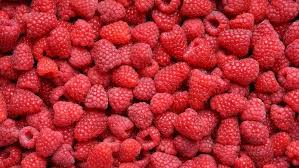
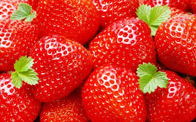

Морковь посевная (лат. Daucus carota subsp. sativus) — двулетнее растение, подвид вида морковь дикая. Обычно в быту под словом «морковь» подразумевается широко распространенный корнеплод именно этого растения.




Огуре́ц обыкнове́нный однолетнее травянистое растение, вид рода Огурец (Cucumis) семейства Тыквенные (Cucurbitaceae), овощная культура.
Тома́т, или помидор (лат. Solánum lycopérsicum) — однолетнее или многолетнее травянистое растение, вид рода Паслён (Solanum)семейства Паслёновые (Solanaceae). Возделывается как овощная культура.
Свёкла (лат. Béta) — род одно-, дву- и многолетних травянистых растений семейства Амарантовые (ранее род относился к семейству Маревые).
Капу́ста огоро́дная (лат. Brássica olerácea) — двулетнее растение, сельскохозяйственная культура; вид рода Капуста (лат. Brassica) семейства Капустные (Крестоцветные).
Карто́фель, или Паслён клубнено́сный (лат. Solánum tuberósum), — вид многолетних клубненосных травянистых растений из рода Паслён (Solanum) семейства Паслёновые (Solanaceae). Клубни картофеля являются важным пищевым продуктом. Плоды ядовиты, в связи с содержанием в них соланина.
Кабачок (уменьш. от укр. кабак, «тыква», из тюркских языков) — кустовая разновидность тыквы обыкновенной с продолговатыми плодами, без плетей. Плоды могут быть зелёного, жёлтого, чёрного или белого цвета. Мякоть нежная и быстроваркая, употребляется также и в сыром виде (в салатах).
Я́блоко — плод яблони, который употребляется в пищу в свежем виде, служит сырьём в кулинарии и для приготовления напитков. Считается, что родиной яблони является Центральная Азия. Наибольшее распространение получила яблоня домашняя. На сегодняшний день существует множество сортов этого вида яблони, произрастающих в различных климатических условиях.
Мали́на обыкнове́нная (лат. Rúbus idáeus) — полукустарник; вид рода Рубус семейства Розовые (Rosaceae).
Клубни́ка — название растений и плодов (многоорешков) одного из видов растений рода Земляника — земляники зелёной (Fragaria viridis) [syn. Fragaria collina]. Само русское слово «клубника» произошло из-за шарообразных плодов этого растения от старорусского слова «клуб» — клубок, свитый шар.
Лук ре́пчатый (лат. Állium cépa) — многолетнее травянистое растение, вид рода Лук (Allium) семейства Луковые (Alliaceae), широко распространённая овощная культура.
Шарик тоже овощ.